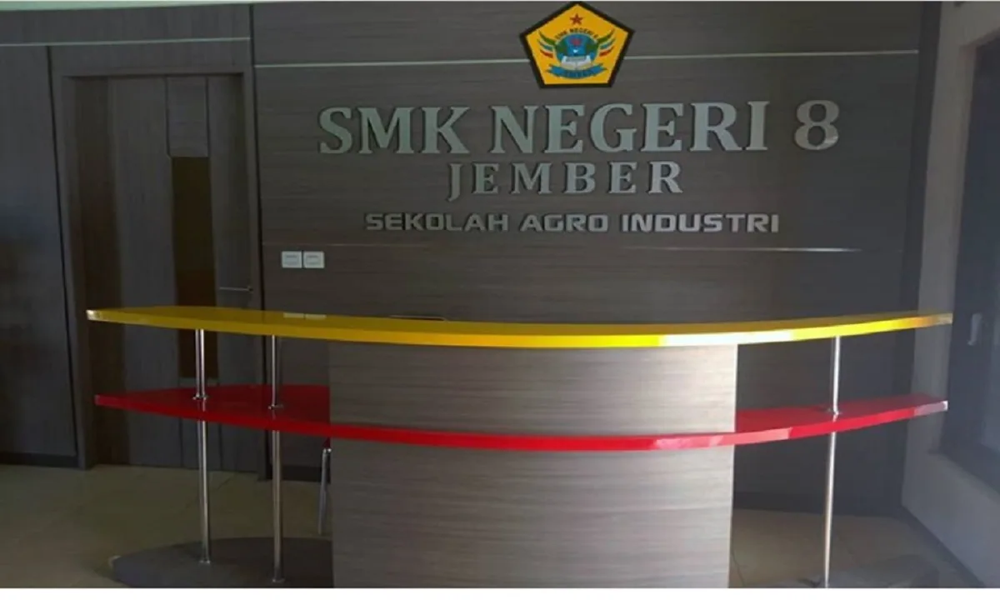
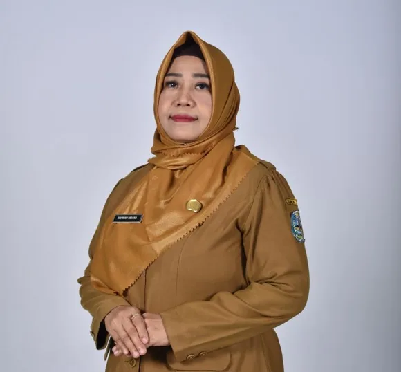
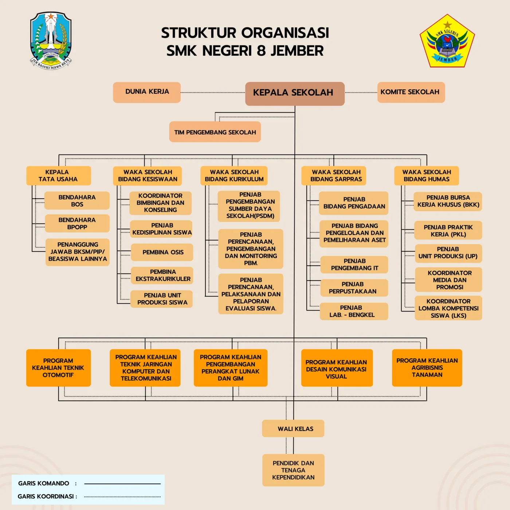
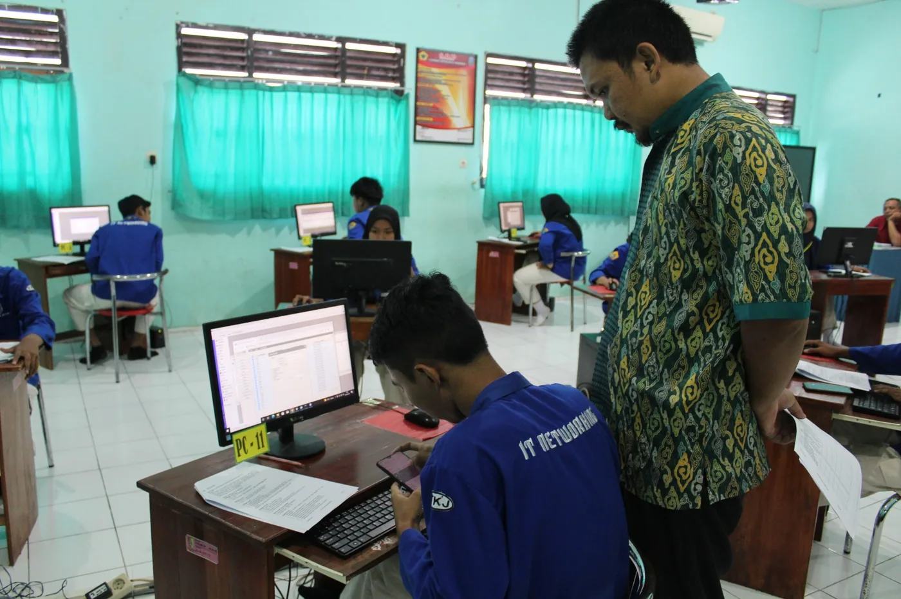

Lobi & front office
Wajah Sekolah Agro Industri — titik sambut tamu dan pelayanan terpadu.
Sejarah, visi-misi, tujuan, struktur organisasi, sarana prasarana, LSP P-1, kemitraan, serta data guru dan tenaga kependidikan Eskalaber.
SMKN 8 Jember adalah Sekolah Menengah Kejuruan yang terletak di Kecamatan Semboro, Kabupaten Jember. Berdiri sejak tahun 2008, kini memiliki 7 kompetensi keahlian yang terbagi atas 3 program keahlian: Teknik Otomotif (TBSM & TKR), Teknik Komputer dan Informatika (TKJ, RPL, DKV), serta Teknologi Pertanian (ATPH & APT).
Berdasarkan surat rekomendasi Kepala Dinas Pendidikan Kab. Jember No. 421.3/3342/436.316/2008 tanggal 25 Agustus 2008; kepala sekolah pertama Drs. Suprayitno.
Kegiatan belajar mengajar tahun pertama bertempat di gedung barat SMP Negeri 4 Tanggul, Kecamatan Semboro, diampu sebagian besar guru SMPN 4 Tanggul.
Menempati gedung unit sekolah baru di Desa Sidomekar: 5 ruang kelas, bengkel Teknik Otomotif, praktik TIK, dan Agribisnis Produksi Tanaman.
Lembaga Sertifikasi Profesi P-1 sekolah berdiri 2 Januari 2015 sebagai lembaga independen penguji kompetensi siswa.
Pembangunan gedung pusat keunggulan dan penandatanganan prasasti program keahlian Desain Komunikasi Visual (Feb 2024).
Juara 3 LKS Dikmen Provinsi Jawa Timur dan Best Completer Finisher Award SEASO Science Olympiad di Penang, Malaysia.
Kemitraan internasional (Beijing Institute of Technology) dan pembukaan 16 rombel SPMB 2026.
— Visi SMK Negeri 8 Jember
Assalamualaikum Wr.Wb. Web Site merupakan salah satu wujud dari kemajuan teknologi di dunia yang tentunya memberikan keuntungan bagi pengguna teknologi sehingga bisa dengan mudah mendapatkan informasi yang diinginkan melalui Web Site. SMKN 8 Jember telah memiliki Web site yang berisi tentang segala informasi SMKN 8 Jember diantaranya mengenai sejarah awal mula berdirinya sekolah ini, berisi tentang data-data guru/ siswa, dan tentunya juga berisi tentang berita kegiatan-kegiatan sekolah. Dengan adanya Web Site ini diharapkan dapat memudahkan para pengguna teknologi untuk mendapatkan informasi tentang SMKN 8 Jember. Selain itu, saya selaku Kepala SMKN 8 Jember berharap isi dan berita didalamnya dapat diketahui oleh masyarakat luas dan bisa diambil manfaat darinya. Wassalamualaikum Wr. Wb.

Hj. Rahmah Hidana, S.Pd., M.Si.Kepala SMKN 8 Jember


Wajah Sekolah Agro Industri — titik sambut tamu dan pelayanan terpadu.

Greenhouse tanaman hias, hidroponik sayur, anggrek, pembibitan buah, rumah kompos.

Bengkel otomotif, lab komputer & jaringan, lab kultur jaringan, lab hama penyakit, ruang tutorial praktik.
| Kelas | Laki-laki | Perempuan | Jumlah |
|---|---|---|---|
| X | 365 | 213 | 578 |
| XI | 345 | 210 | 555 |
| XII | 329 | 200 | 529 |
| XIII | 36 | 14 | 50 |
| Total | 1712 | ||
Lembaga Sertifikasi Profesi P-1 berdiri 2 Januari 2015 sebagai lembaga independen yang melaksanakan uji kompetensi untuk pengakuan kompetensi profesi siswa secara nasional.
Rekapitulasi resmi kemitraan SMKN 8 Jember dengan dunia usaha/dunia industri.
Sumber: data guru & karyawan SMKN 8 Jember.